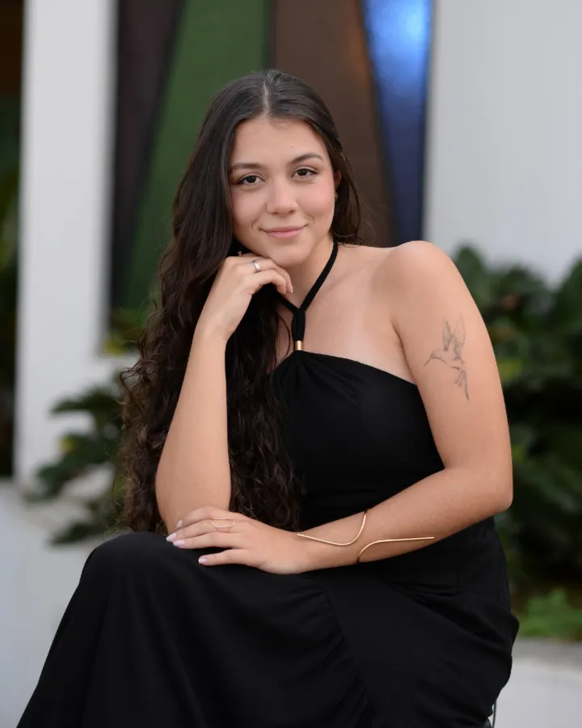
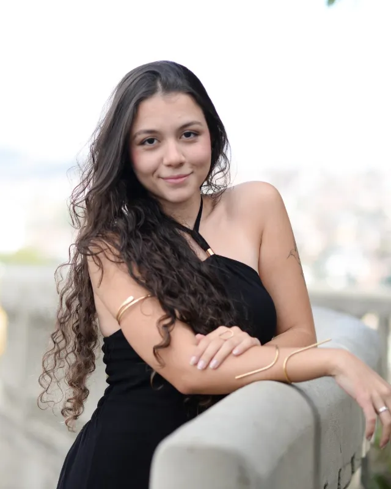

Maria Luiza Gonçalves Milani
Psicóloga · CRP 04/[[PENDENTE: número do CRP]]
Um lugar para ser e estar como você quiser
Psicoterapia com escuta orientada pela psicanálise, para crianças, adolescentes, adultos e idosos. Online ou presencial em Muriaé-MG.
Conversar no WhatsApp Conhecer a abordagem
[[PENDENTE: confirmar textos do topo com a Malu (vindos do esboço)]]


Sobre mim
Quem vai te escutar
Sou a Maria Luiza, psicóloga formada pela FAMINAS Muriaé. Meu jeito de atender é caloroso, espontâneo e adaptável: cada pessoa chega com uma história única, e é ela que dá o ritmo do nosso trabalho.
Acredito na singularidade de cada história, no estudo contínuo e no amor como forma de estar presente para quem chega até mim.
A Psicologia entrou na minha vida antes da faculdade: quando criança, ela me ajudou a atravessar meu primeiro luto. Desde então, quis oferecer aos outros esse mesmo cuidado. [[PENDENTE: confirmar se ela quer contar isto no site]]
Maria Luiza
[[PENDENTE: confirmar textos do Sobre com a Malu (vindos do esboço)]]
Formação
Minha trajetória
[[PENDENTE: confirmar formação, estágios e projetos com a Malu (vindos do esboço)]]
-
Graduação
Psicologia · FAMINAS Muriaé (2022–2026)
-
Psicologia hospitalar
2 anos de estágio no Hospital do Câncer de Muriaé
-
Clínica
1 ano de estágio em clínica-escola
-
Projetos de extensão
Grupos terapêuticos com pacientes oncológicos, com familiares e com mães de crianças em tratamento; atividades lúdicas com crianças internadas; arteterapia com colaboradores de hospital; e o Se liga psi.
-
Pesquisa
TCC “A morte do outro e a perda do eu: o abalo narcísico diante de processos de luto à luz da teoria freudiana”
-
Artigos publicados
[[PENDENTE: artigos publicados (título, revista/evento, ano, link)]]
-
Eventos científicos
6 trabalhos apresentados (COPEX III, COPEX IV e O fazer psicanalítico, da UFJF), 3 deles premiados como melhores trabalhos
-
Estudos
Liga acadêmica e grupos de estudo em psicanálise
Ver currículo Lattes [[PENDENTE: link do currículo Lattes]]
Abordagem
Uma escuta orientada pela psicanálise
[[PENDENTE: confirmar texto da abordagem com a Malu (vindo do esboço)]]
Nem tudo o que nos faz sofrer está à vista.
Na psicanálise, é pela fala, e por uma escuta atenta a ela, que vamos dando sentido ao que antes parecia sem nome.
O trabalho busca aliviar o sofrimento a partir do que você traz e da relação que se constrói entre nós, no seu tempo e do seu jeito.
Para quem
Para quem é
[[PENDENTE: confirmar público e demandas com a Malu (vindos do esboço)]]
- Crianças
- Adolescentes
- Adultos
- Idosos
Sempre em atendimento individual.
Você não precisa chegar com um problema definido.
Ao longo da minha formação, estive perto de muitas histórias de perda: no hospital, nos grupos e na pesquisa. Por isso, o luto, seja ele qual for, é um tema que acolho com atenção especial.
[[PENDENTE: outras demandas principais que ela atende]]
Passo a passo
Como funciona
[[PENDENTE: confirmar passo a passo, horários e plataformas com a Malu (vindos do esboço)]]
-
Primeiro contato
Você me chama no WhatsApp, tira suas dúvidas e combinamos dia, horário e formato.
-
Primeira conversa
No primeiro encontro, conheço um pouco de você e do que te trouxe até aqui.
-
As sessões
Em geral, os encontros são semanais, com 50 minutos.
-
Onde
Online, pelo Google Meet ou pelo Microsoft Teams, ou presencial em Muriaé-MG. O endereço é enviado quando combinarmos o atendimento.
Segunda a sexta, das 8h às 18h
Particular e convênios [[PENDENTE: quais convênios]]
Dúvidas
Ficou alguma dúvida?
[[PENDENTE: confirmar perguntas e respostas com a Malu (vindas do esboço)]]
A terapia funciona?
A terapia não trabalha com promessas de resultado, porque cada processo é único. O que ela oferece é um espaço de escuta, sem julgamentos, para você falar do que sente e entender o que se repete na sua história.
Quanto tempo leva?
Não há um prazo definido. Cada pessoa tem o seu tempo, e a duração é algo que vamos percebendo juntos ao longo do processo.
E se eu não souber o que falar?
Tudo bem. Não existe jeito certo de começar: você pode falar do que vier à cabeça, inclusive de não saber o que dizer.
Atende por convênio?
Sim, atendo particular e por convênio. Me chama no WhatsApp para confirmar se o seu plano está entre os atendidos e conversarmos sobre valores.
Atende crianças e adolescentes?
Sim. Atendo todas as idades, sempre de forma individual. Não atendo casais, famílias ou grupos.
Como é o atendimento online?
É por videochamada, pelo Google Meet ou pelo Microsoft Teams, com a mesma duração e o mesmo sigilo do presencial. Vale escolher um cantinho onde você se sinta à vontade para falar.
O que eu falar fica entre nós?
Sim. O sigilo profissional é um dever ético da psicóloga e protege o que é dito em sessão, salvo as exceções previstas no Código de Ética.
[[PENDENTE: ela emite recibo para reembolso?]]
Contato
Quando quiser, estou por aqui
Me manda uma mensagem para tirar dúvidas ou combinar a nossa primeira conversa.
- @eumalumilani [[PENDENTE: confirmar Instagram]]
- [[PENDENTE: e-mail profissional (o esboço usa marialugm26@gmail.com)]]
[[PENDENTE: foto para o Contato]]